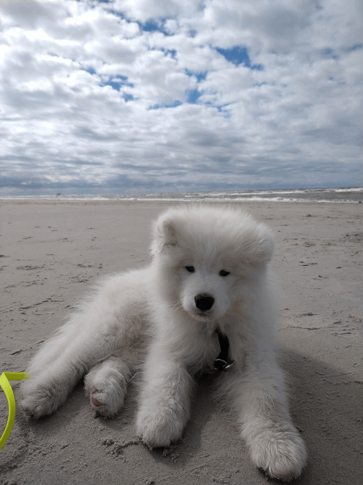
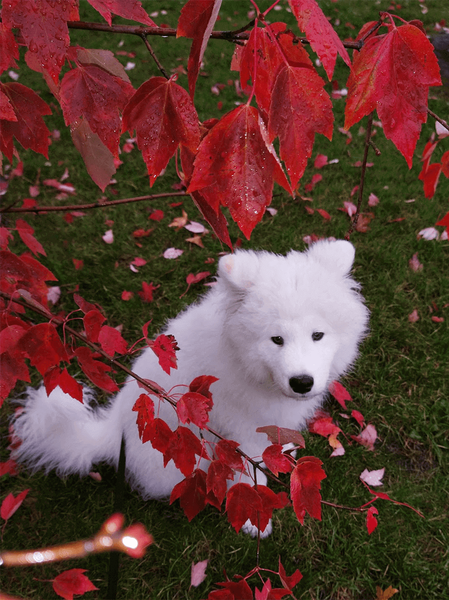
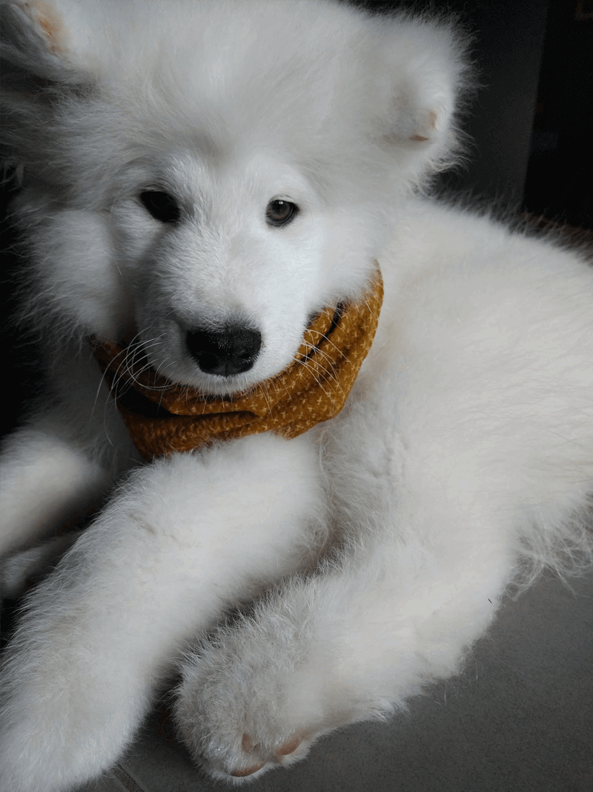
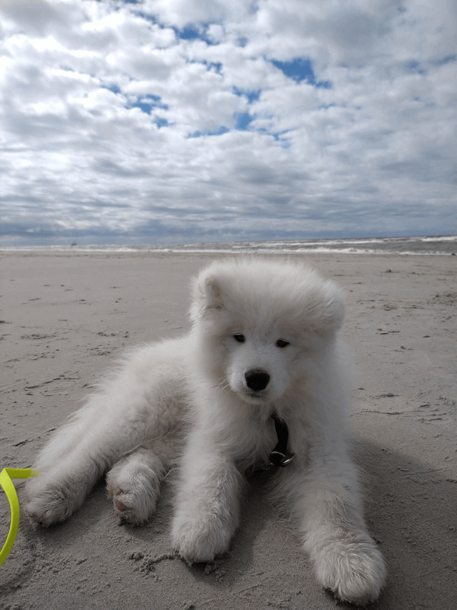
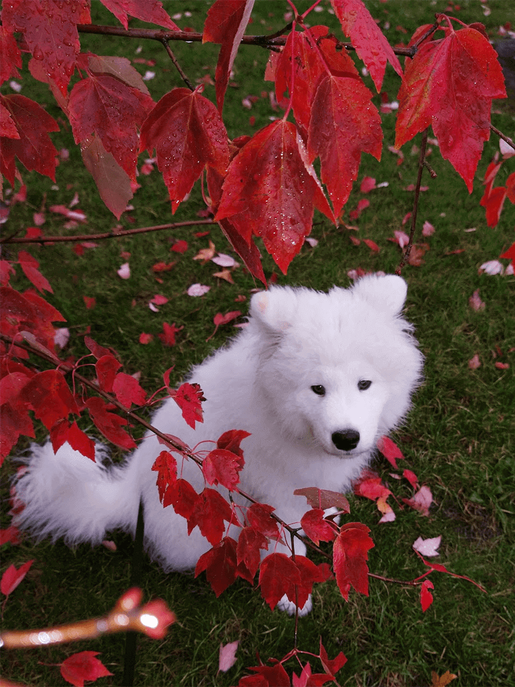
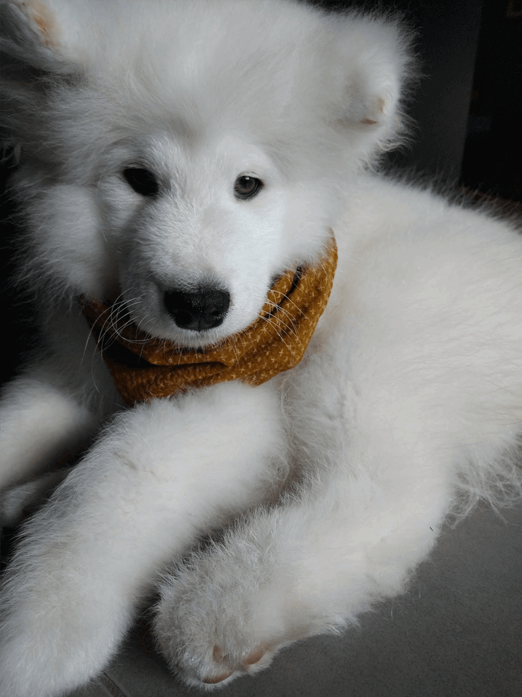
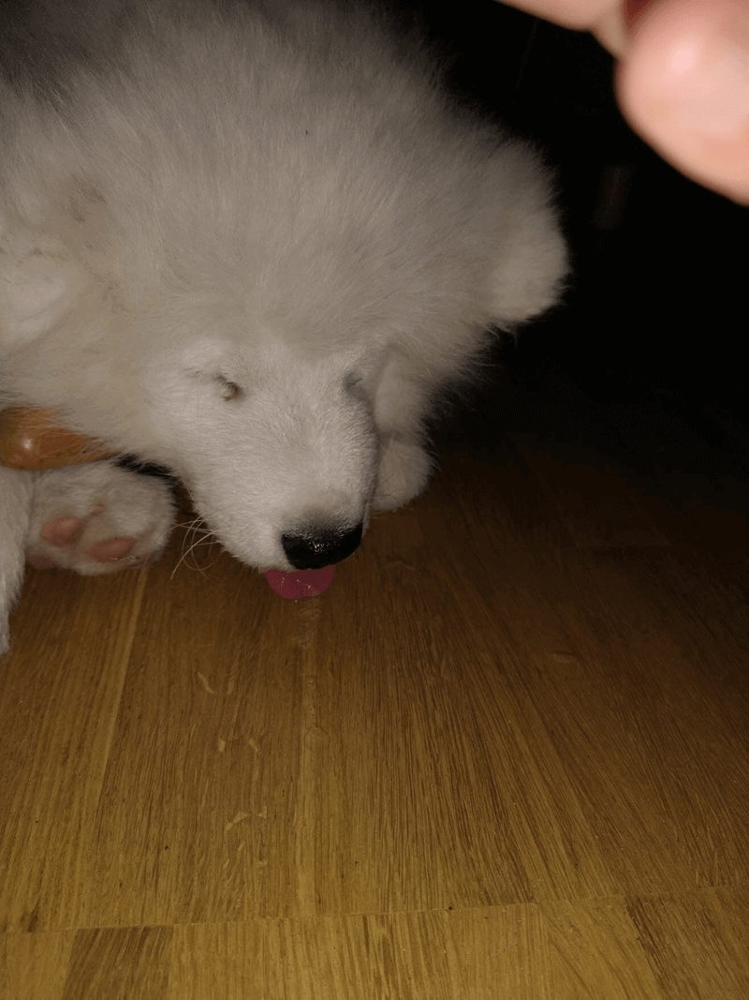
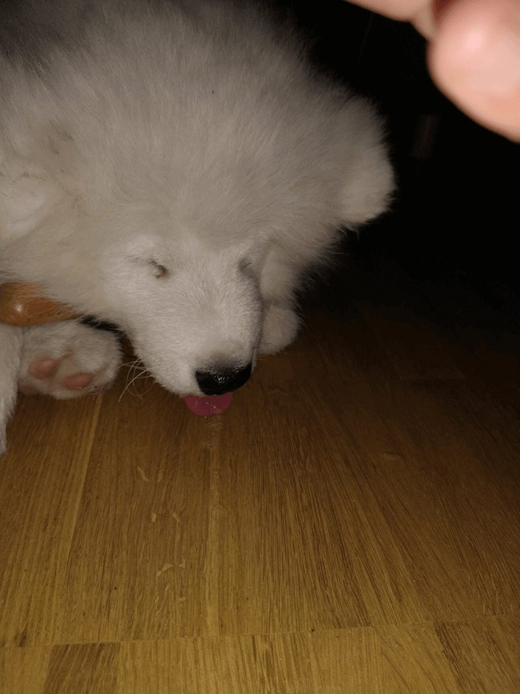

O que é um desvio portossistêmico?
Um desvio portossistêmico (derivação hepática) é um defeito nos vasos sanguíneos do fígado.
Ele prejudica o processo de filtragem do órgão, espalhando toxinas pelo sangue do Buddy, envenenando o bichinho por
dentro. Isso compromete seu crescimento e suas funções cerebrais.
Quais
são os sintomas do Buddy?
Diarréia e vômito aleatórios. Ele bebe muito mais água que o normal
e também faz bem mais xixi. Depois de uma refeição maiorzinha, ou um
petisco bem protéico, vem a encefalopatia hepática: o Buddy começa a
agir estranhamente, encarando paredes, andando inquietamente como se
fosse cego e pressionando a cabeça dele contra coisas. Nas
ocorrências mais extremas ele começa a babar sem controle, desabando
no chão e entrando em coma.
E ele
vai ficar bem?
Infelizmente a gente não sabe. Como ele é mais novinho e de uma raça
de porte maior, as probabilidades não são as melhores. No momento,
ele está numa dieta hepática e tomando vários remédios (Lactulose,
Amoxicilina e Omeprazol), para tentar ficar estável até a data da
cirurgia. O procedimento cirúrgico é de risco, mas é a única opção
para ele sequer ter uma chance de viver o tempo de vida normal de um
cachorro.
Vocês
falaram com a criadora dele?
Sim. Foi tão surpreendente pra ela quanto pra gente. Essa é uma
doença genética muito rara em Samoiedas, então os testes preventivos
não são feitos aqui na Alemanha. A portadora do gene (a mamãe do
Buddy) não vai mais ser cruzada. A criadora do Buddy tem sido muito
solidária e chegou a oferecer pegar o Buddy de volta, mas essa não
foi uma opção para nós.
Vocês
não têm seguro?
Nós temos, mas como é uma doença congênita eles não cobrem nenhuma das despesas.

 






 
